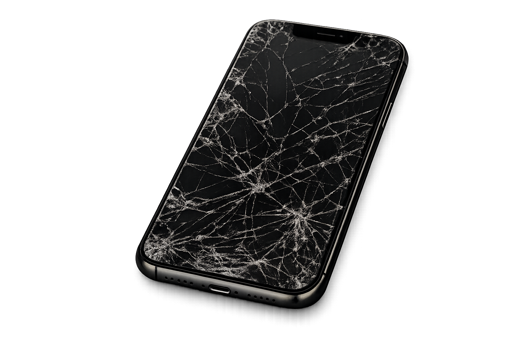

Tu dispositivo, nuestra obsesión. Calidad premium en tiempo récord.

Analizamos tu dispositivo sin compromiso ni costes ocultos.
Solo instalamos componentes Grado A+ certificados.
El 90% de nuestras reparaciones se hacen en 45 min.
Reparaciones en menos de 40 minutos para la mayoría de modelos.
Usamos repuestos certificados con 6 meses de cobertura total.
Técnicos especializados en micro-soldadura y última tecnología.